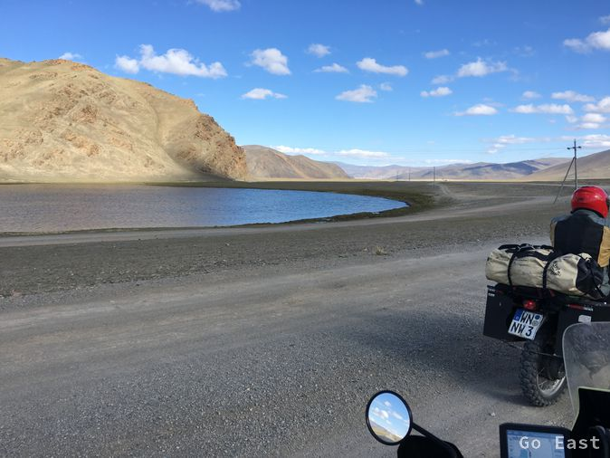
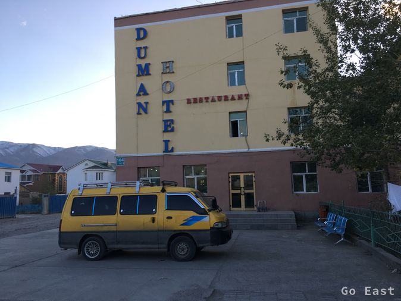

Wir fahren bei 6 Grad los und erreichen die Grenze auf 2.000m Höhe in Tashanta. Es hat geschneit letzte Nacht und da sind wir jetzt an der Schneegrenze angelangt. Der Generator der Tanke ist defekt und so sieht es mit Sprit schlecht aus. Als wir bei der Grenze ankommen, müssen wir erst mal warten. Es gibt Blockabfertigung. Als der Block, der gerade abgefertigt wird, fertig ist, ist Mittagspause für eine Stunde. Es ist immer noch unter 10 Grad und nun kommt doch die Sonne etwas heraus und es gibt keinen Wind. Wir machen Picknick mit russischer Salami, Senf, Brot und Kaffee und Tee, den wir heute morgen noch gemacht hatten und warten. Langsam kriecht die Kälte auch durch die Schuhsohlen und die Warterei wird zäh.
Endlich geht es weiter und nun heißt es Gepäck abladen und zum Scanner schleppen. Alles läuft völlig korrekt ab und endlich sind wir fertig und es geht weiter. Die nächsten 20km sind noch prima in Ordnung. Letzter russischer Posten. Er öffnet das Gatter und entlässt uns auf die nun folgende Piste für 5km bis wir den mongolischen Posten treffen, der mehrheitlich von uniformierten Frauen betrieben wird. Kurze Wartezeit hier. Wir durchlaufen verschiedene Stationen ohne Gepäckdurchsuchungen und sind nun in der Mongolei.
Eine Fahrzeug-Versicherung muss abgeschlossen werden. Wir können unser übriges kasachisches und russisches Geld dort auch umtauschen und ziehen endlich los. Wir erwarten 100km Piste. Nach 20km ist die Piste vorbei und es geht weiter auf prima Asphalt. Die Straße führt auf einer Höhe von 2.000m bis 2.600m in toller Landschaft bei immer noch unter 10 Grad und Sonnenschein.
Versicherungsbüro und Wechselstube an der mongolischen Grenze

Wir erreichen Ölgii und finden Hotel Duman, ziemlich fertig und abgerissen für 3 Sterne aber besser als in ungeheizter Jurte wie Martin und Andre es hatten. Von Martin und Andre erfahren wir beim Abendessen im Restaurant per WhatsApp, dass sie heute eine schwierige Etappe in den Norden hatten. 200km Piste mit Sandfeldern, Schotter und Matschlöchern. Sie haben 8 Std gebraucht. Wir ziehen nun in Erwägung die südliche Route zu nehmen, da es südlich etwas wärmer sein dürfte und die Straße belebter sein soll. Die Kälte und die Niederschläge kommen dieses Jahr wohl früher. Wir sind einfach 2-3 Wochen zu spät für die mittlere Route, wie sie Martin und Andre jetzt fahren.
